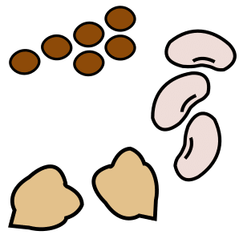
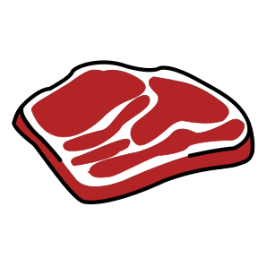
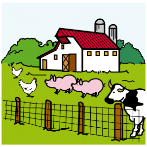

Thématique B · 2de Bac Pro
Fiche de révision B1 — L’alimentation écoresponsable
Révise en t'amusant, écoute, puis imprime ta fiche
Fais défiler la page : les notions apparaissent une à une. Touche les cartes pour les retourner, touche 🔊 Écouter pour entendre une carte, une question ou une correction, puis réponds aux questions « Je vérifie mes acquis ».
1. Le développement durable
Le développement durableUn développement qui répond aux besoins du présent sans compromettre la capacité des générations futures à répondre aux leurs. Notion officialisée en 1992, au Sommet de la Terre à Rio. D'après l'Insee.
Les trois piliers : touche chaque carte.
Consommation écoresponsableChoisir ses aliments en limitant leur impact sur l'environnement.
Alimentation durableAlimentation qui tient compte de l'environnement, de la santé, du prix et des producteurs.
2. Bien choisir ses aliments
 Les conseils de Santé publique FrancePrivilégier le fait maison, les aliments de producteurs locaux, les aliments de saison et, si possible, les aliments bio.
Les conseils de Santé publique FrancePrivilégier le fait maison, les aliments de producteurs locaux, les aliments de saison et, si possible, les aliments bio. La saisonnalitéConsommer les fruits et légumes à la saison où ils poussent.
La saisonnalitéConsommer les fruits et légumes à la saison où ils poussent.
Les légumes secsIls peuvent remplacer la viande et la volaille ; il est conseillé de les associer à un produit céréalier.
La viandePrivilégier la volaille. Limiter les autres viandes (porc, bœuf, veau, mouton, agneau, abats) à 500 g par semaine.Impact carbone d'un repas, en kg d'équivalent CO₂ : bœuf 4,97 ; veau 4,12 ; porc 1,65 ; poulet 1,46 ; végétarien 0,85 ; végétalien 0,54. Un repas au bœuf émet environ six fois plus qu'un repas végétarien. Chiffres : Impact CO2 (ADEME), relevés le 26/10/2026.
3. Circuits courts et circuit long

Le circuit courtUne vente avec un intermédiaire au plus : vente directe du producteur au consommateur, ou un seul intermédiaire. Il n'impose pas forcément de proximité. D'après la DGCCRF.Le circuit longPlusieurs intermédiaires : par exemple la productrice, le grossiste, l'usine, le supermarché, puis le consommateur.
4. Les signes officiels de qualité
Touche une carte pour voir ce que garantit le signe.
L'agriculture raisonnée : démarche lancée en 2002 par les pouvoirs publics pour des pratiques agricoles plus respectueuses de l'environnement. Elle a été supprimée et remplacée par la certification environnementale. D'après le ministère de l'Agriculture (JO du 04/08/2015).
5. Le gaspillage alimentaire
 Le gaspillage alimentaireToute nourriture destinée à la consommation humaine qui, à une étape de la chaîne alimentaire, est perdue, jetée ou dégradée. Code de l'environnement, article L541-15-4, cité par le SDES.
Le gaspillage alimentaireToute nourriture destinée à la consommation humaine qui, à une étape de la chaîne alimentaire, est perdue, jetée ou dégradée. Code de l'environnement, article L541-15-4, cité par le SDES.3,9 millions de tonnesde nourriture gaspillée en France en 2024, soit 56 kg par habitant (sur 10 millions de tonnes de déchets alimentaires).
19 kg à la maisonPar habitant : maison 19 kg ; production primaire 15 ; transformation 10 ; restauration hors domicile 8 ; distribution 4.
Pertes alimentairesNourriture perdue avant la vente : récolte, transformation, transport. La pomme de terre est la culture qui produit le plus de déchets alimentaires par rapport à sa production : 9 % de la récolte.
SurconsommationAcheter ou consommer plus que ses besoins. Des quantités trop copieuses laissent des restes qui finissent jetés.
À la maison, sur 4,3 millions de tonnes de déchets alimentaires : 69 % sont non comestibles ; les 31 % restants (1,3 million de tonnes) sont du gaspillage : 0,8 de restes de repas et 0,5 de produits encore emballés. D'après le SDES, 2026.
6. DLC, DDM et conservation
La conservationRespecter la température et la durée indiquées sur l'emballage. Confondre DLC et DDM fait jeter des aliments encore consommables sans danger.
7. Les conséquences sur l'environnement
Impact environnementalLe gaspillage consomme inutilement de l'énergie et de l'eau ; des gaz à effet de serre pourraient être évités. D'après l'ADEME.
PollutionAbandonnés dans la nature, les emballages plastiques polluent les sols et l'eau. Dans la poubelle grise, ils sont incinérés ou mis en décharge : des polluants passent dans l'air et le sol.
Le triTous les emballages, même en plastique, vont dans le bac de tri : la poubelle jaune.
Déchet recyclableIl peut devenir une nouvelle matière. Tous les emballages se trient, mais tous ne sont pas encore recyclés : la loi prévoit qu'ils soient tous recyclables d'ici 2030.
Le mieux reste de limiter le plastique : moins de déchets = moins de pollution. Les gobelets à usage unique contenant plus de 8 % de plastique ont été progressivement interdits depuis 2020. D'après le ministère de la Transition écologique, 2026.
8. Les mesures contre le gaspillage
PréventionActions qui évitent de produire des déchets.
RéglementationLois et règles qui obligent les acteurs : Garot, EGalim, AGEC.
Attitude écoresponsableAcheter selon ses besoins, ne pas gaspiller, trier ses déchets.
Je vérifie mes acquis : 0 / 0